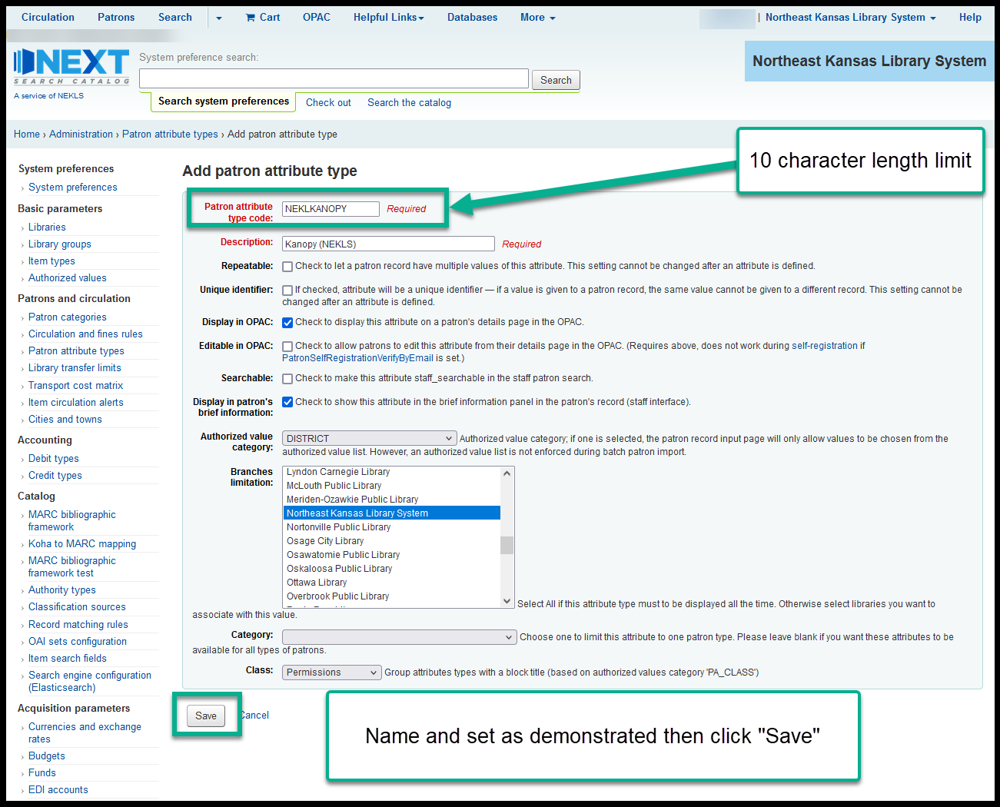

Setting up Kanopy authentication¶
Kanopy cannot retrieve a borrower’s home library in the usual manner. This means that setting up authentication for Kanopy requires extra setup to send the borrower’s home library through an extended borrower attribute. Because this new borrower attribute can not be consitently updated automatically when existing borrowers have their home library changed, reports need to be run regularly by the library to update borrowers whose home library may have changed without the attribute being updated.
Steps to take¶
Go to Home > Administration > Patron attribute types and click on “New patron attribute type.”
Click on “New patron attribute type,” set the following fields, and click on “Save”:
- Patron attribute type code [code should be partialbranchcode+KANOPY - maxlength is 10 characters]
- Description [Kanopy (partial branchname in parenthesis)]
- Repeatable [unchecked]
- Unique identifier [unchecked]
- Display in OPAC [checked]
- Editable in OPAC [unchecked]
- Searchable [unchecked]
- Display in patron’s brief information [checked]
- Authorized value category [DISTRICT]
- Branches limitation [NEKLS + appropriate branch]
- Category [blank]
- Class [Permissions]

The new attribute should appear in the “Permissions” section of the list of attributes.
Create a “xxx borrowers without Kanopy access” report for the library adding Kanopy (use 3495 as a template).
- This report should be run regularly by the new library to identify borrowers who should have the new attribute but don’t.
Create a “Non-xxx patrons with xxx Kanopy access” report for the library adding Kanopy (use 3496 as a template).
- This report should be run regularly by the new library to identify borrowers who should not have the new attribute but do.
Modify the following jQuery, replacing the selectors marked xxx, to include the selectors for the library adding Kanopy and add it to the appropriate spot in the intranetuserjs system preference:
//xxx specific //Adds class to KANOPY allowed attribute $('.XXX label:contains("Kanopy (xxx):")').parent().addClass('xxxkanopy'); //Adds Kanopy allowed value to new patrons created at xxx only on new users var url = $(location).attr('href'); if (url.indexOf("memberentry.pl?op=add") != -1) { $('.xxxkanopy select option[value=xxx]').attr("selected", "selected"); } //Changes to Kanopy not allowed when home library is changed to not-xxx $('.xxx #libraries').change(function() { $('.xxxkanopy select option[value="0"]').attr("selected", "selected"); }); //Changes to Kanopy allowed when home library is changed to xxx $('.xxx #libraries option[value=xxx]').click(function() { $('.xxxkanopy select option[value=xxx]').attr("selected", "selected"); });
Create training documentation with new screenshots for the library adding Kanopy (use https://northeast-kansas-library-system.github.io/next/branches/LANSING/kanopy.html as an example).
Open an RT ticket with ByWater Solutions and ask them for:
- A new SIP username.
- The username should indicate that it’s for Kanopy at the BRANCHCODE that is joining Kanopy (kanopy_lansing, kanopy_sabetha are examples of past SIP usernames).
- The login should pass the borrower’s home library in the second AF field.
- The login should pass the xxxKANOPY attribute as an extended attribute field (we have called this SIP field “KN” in all other Kanopy logins).
- ByWater should give it a password of their choosing.
- When done, this login will look similar to the SIP logins we asked for in RT 63380, 75339, 75340, and 80959.
Create 6 Kanopy test cards with parameters matching 1003002000964 - 1003002000970. These accounts will be used by Kanopy for testing the SIP connection.
Once ByWater has created the login, test it with the SIP testing tool (https://clcohio.org/sip-testing-tool/) and the accounts created in the previous step.
Ask the library to send you the authentication set-up form that Kanopy sends them and send the answers back to the library so they can fill out the form.
- A sample of the most recent Kanopy authentication form we’ve seen is at ADDLINK
Run the report created in step 4 and use the borrower batch modification tool to add the “Kanopy allowed” attribute for this library to all of the borrowers at this library that don’t already have it. This should be done in groups of no more than 750 borrowers at a time to keep from crashing the system.
Once all of these steps are complete, the library should be ready to start using Kanopy.